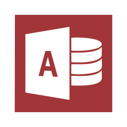
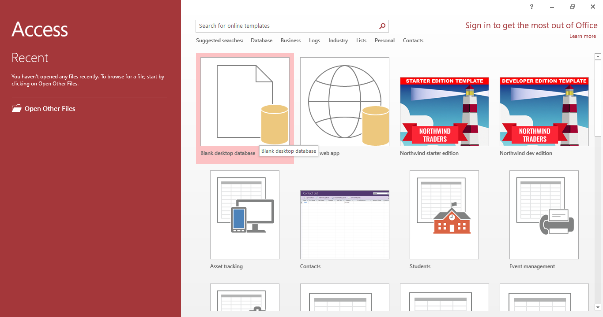
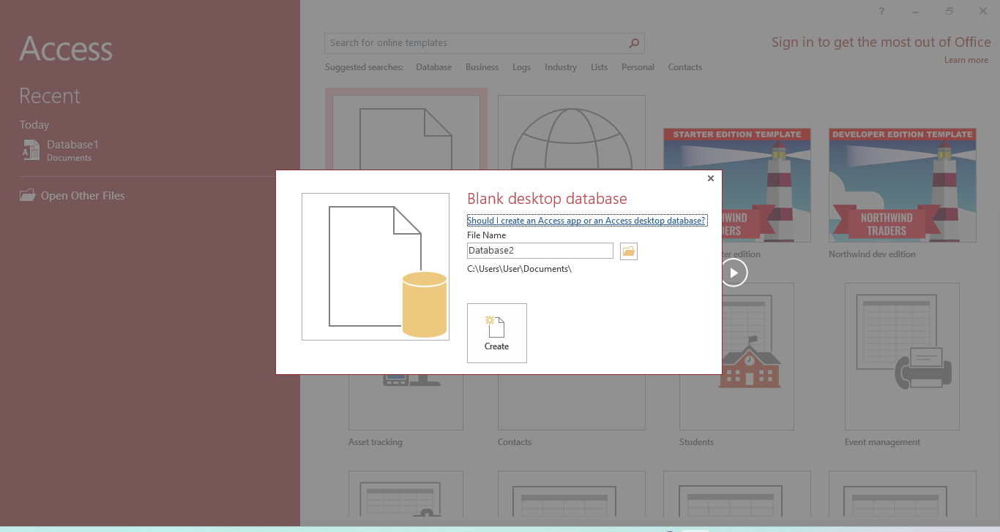
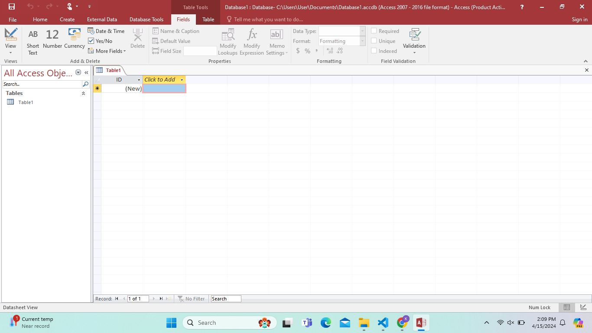
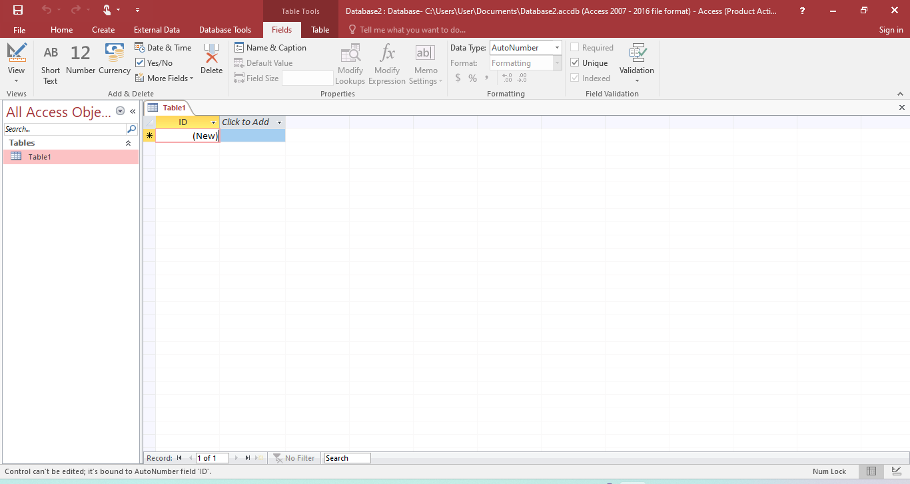
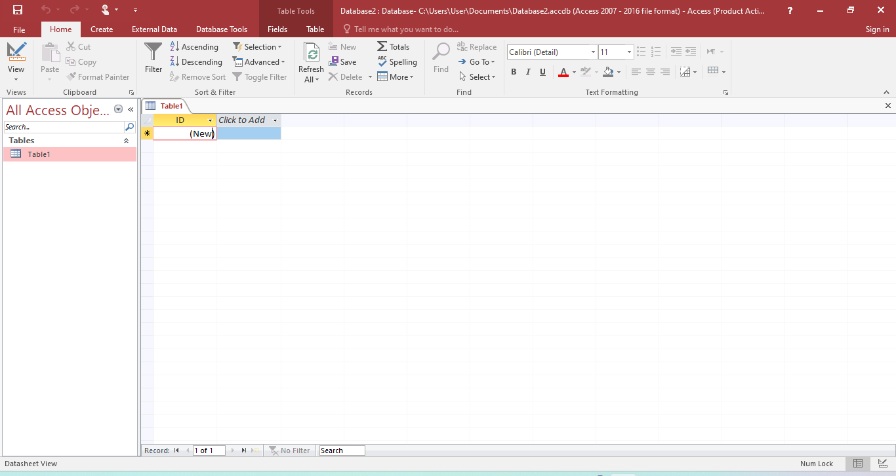
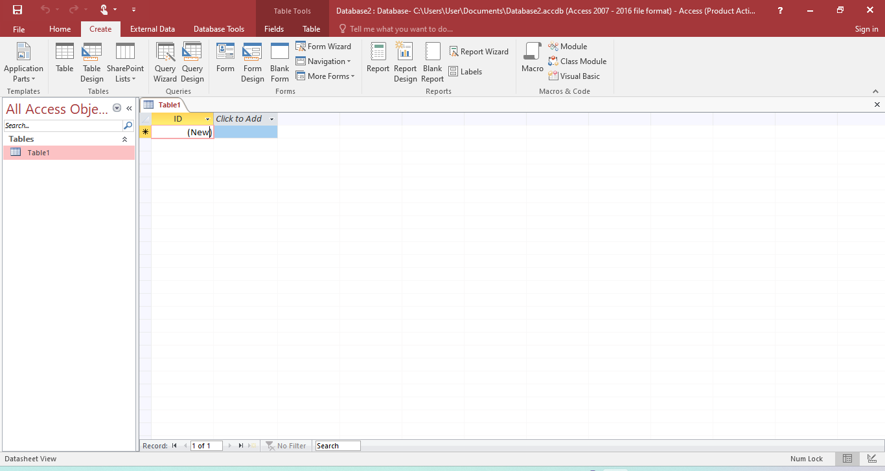

Microsoft Access is a database management system (DBMS) that combines a relational database engine with a user-friendly interface and development tools. Follow these simple steps to understand how to create and manage databases effectively.

Select “Blank Desktop Database” to begin creating a new database.


Choose a folder, enter a file name, and click “Create” to save your database file.
Switch to Design View, name your table, and define fields with their respective data types for storing information.


Use the Home tab to format text, sort data, apply filters, and manage records efficiently.
Use the Create tab to design Tables, Queries, Forms, and Reports that help organize and present data.


Use the Design tab to enhance the look and structure of your database objects for better usability.